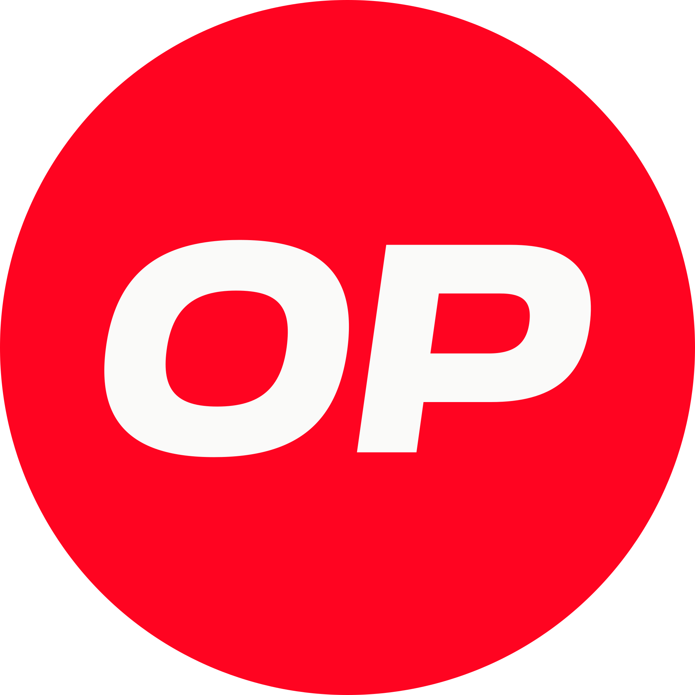

Analisis Kelayakan & Rekomendasi Jaringan Blockchain
Menentukan Fondasi On-chain Terbaik untuk Menyimpan 5.000 - 7.000 Invoice Bulanan PT. Mitra Seribu Saudara.
 Polygon PoS
Polygon PoS

Optimism Base
Base
 Arbitrum
Arbitrum
🚀 Executive Summary
- ✓ Data Empiris Gas Fee: Membandingkan uji coba nyata di 4 jaringan EVM.
- ✓ Analisis Beban RPC: Menghitung Write vs Read untuk 4 provider infrastruktur utama.
- ✓ Mitigasi Resiko: Menganalisis volatilitas token gas untuk budgeting operasional jangka panjang.
Jenis RPC Request & Beban API Bulanan
Write Request (`storeHash`)
Mengubah State Blockchain
~6.000 call/bln
Membutuhkan validasi blockchain dan memakan biaya native gas fee (POL/ETH).
Read Request (`documentExists`)
Query Pengecekan Duplikasi
~30.000 call/bln
Dilakukan otomatis oleh sistem frontend saat menginisialisasi list invoice. **100% Gratis** (tanpa gas fee).
Read Request (`verifyDocument`)
Verifikasi Manual (verify.html)
~15.000 call/bln
Dipicu ketika pengguna melakukan scan QR code untuk membuktikan orisinalitas hash. **100% Gratis**.
Meskipun read call gratis (tanpa gas fee), semua request ini tetap memakan limitasi bandwidth (credits) RPC Provider. Oleh karena itu, kita membutuhkan provider dengan free tier yang melimpah.
Hasil Uji Coba Transaksi Riil
Data gas fee ril yang diperoleh langsung dari pengujian nyata
| Jaringan | Gas Used (Rata-rata) | Gas Fee (Native) | Estimasi USD | Token Gas |
|---|---|---|---|---|
|
Polygon PoS
|
134.521 Gas | 0.043 POL | ~$0.00350 | POL (ex-MATIC) |
| Optimism L2 | 121.081 Gas | 0.000000122 ETH | ~$0.00019 | ETH |
|
Base L2
|
121.081 Gas | 0.000000727 ETH | ~$0.00117 | ETH |
|
Arbitrum L2
|
121.642 Gas | 0.000002432 ETH | ~$0.00392 | ETH |
💡 Insight Utama
Jaringan Optimism L2 memangkas pengeluaran gas hingga 94.5% dibandingkan dengan Polygon PoS. Hal ini disebabkan efisiensi kompresi data L2-ke-L1 dan optimalisasi OP Stack Bedrock yang sangat matang dalam melakukan kalkulasi state-update.
Tx Fee Log Viewer
Menampilkan cuplikan data ril hasil eksekusi smart contract dari file Transaction_Fee.txt
Data ditarik secara dinamis dari file presentasi lokal / server.
Kecepatan Konfirmasi & Finalitas Jaringan
Mengukur kecepatan respons sistem (UX) dan tingkat kekekalan data on-chain.
Arbitrum
Tercepat dalam memberikan konfirmasi UI kepada user.
Base
*Menggunakan OP Stack Flashblocks untuk pre-confirmations instan.
Menggunakan OP stack standar dengan performa stabil.
Polygon PoS
Checkpointing L1 tercepat namun rentan reorg jaringan lokal.
⏱️ Block Time
Interval waktu pembuatan blok baru di blockchain. Semakin kecil nilainya, semakin cepat transaksi masuk antrean eksekusi pertama.
⚡ Soft Finality
Waktu respons di mana transaksi dikonfirmasi oleh Sequencer L2. Memberikan umpan balik instan ke antarmuka aplikasi Fintech (UX cepat).
🔐 L1 Settlement (Hard Finality)
Waktu yang dibutuhkan untuk mengunci dan merelasikan data transaksi dari L2 ke Ethereum Mainnet (L1) agar permanen dan tidak bisa diubah.
Biaya Bulanan & Risiko Volatilitas Koin
Analisis anggaran operasional berdasarkan konsumsi 5.000 - 7.000 transaksi/bulan.
Proyeksi Gas Fee Bulanan
Digunakan oleh jaringan Optimism, Base, dan Arbitrum. Volatilitas rata-rata bulanan berada pada tingkat ±15% (2025-2026). Perubahan harga yang moderat ini memberikan kestabilan anggaran operasional bagi perusahaan.
Digunakan oleh jaringan Polygon PoS. Volatilitas koin POL tercatat mencapai ±35% (2025-2026). Fluktuasi ini dapat mempersulit estimasi anggaran biaya gas bulanan serta meningkatkan resiko operasional jika terjadi lonjakan mendadak.
Stabilitas Jaringan & Riwayat Downtime (2024-2026)
Menilai uptime sequencer dan integritas status on-chain.
Arbitrum MainnetTercatat 0 menit downtime sequencer yang tidak direncanakan selama periode 2025-2026. Sangat direkomendasikan untuk stabilitas tinggi dApp fintech korporat.
Mengalami gangguan sequencer minor ("unsafe head stall") di awal 2024, namun setelah perbaikan total di tahun 2025-2026, jaringan beroperasi dengan keandalan penuh.
Base MainnetTerjadi sequencer crash total selama 29 menit pada Agustus 2025. Dilanjutkan dengan kegagalan update state L1 (TEE Enclave Bug) selama 30 jam pada Mei 2026.
Polygon PoSValidator consensus layer (Heimdall) terhenti selama 1 jam akibat validator bug pada Juli 2025. Selain itu, kinerja server RPC publik gratisan sering mengalami degradasi.
Biaya & Limitasi RPC Provider
Menghitung total kuota API bulanan (~51.000 request) terhadap kuota gratis provider.
Compute Units (CU)
Menawarkan 30 Juta CU/bulan secara gratis. Konsumsi estimasi bulanan kita sangat kecil yaitu sekitar 1,37 Juta CU/bulan (Rata-rata 27 CU per call).
Daily Credits
Menawarkan kuota melimpah hingga 3 Juta request/hari gratis. Total beban operasional harian kita hanya berkisar ~1.700 request/hari.
Request Units (RU)
Menawarkan limit 3 Juta RU/bulan gratis. Konsumsi flat rate operasional kita sangat aman hanya sebesar 51.000 RU/bulan (1 call = 1 RU).
API Credits
Menawarkan 10 Juta API Credits/bulan gratis. Estimasi konsumsi dApp operasional kita hanya sekitar 1,5 Juta Credits/bulan.
Optimism Mainnet Sebagai Pilihan Utama Jaringan
Berdasarkan data uji coba riil, jaringan Optimism menawarkan rasio biaya operasional bulanan terendah (~$1.33) dengan keandalan tinggi (99.95%). Volatilitas token gas ETH juga jauh lebih aman diproyeksikan daripada token POL (Polygon).
Siap Melakukan Integrasi?
Anda dapat langsung meluncurkan smart contract verifikator di platform dashboard Fintech1000s pada jaringan terpilih.
Kembali ke Aplikasi Utama ↗